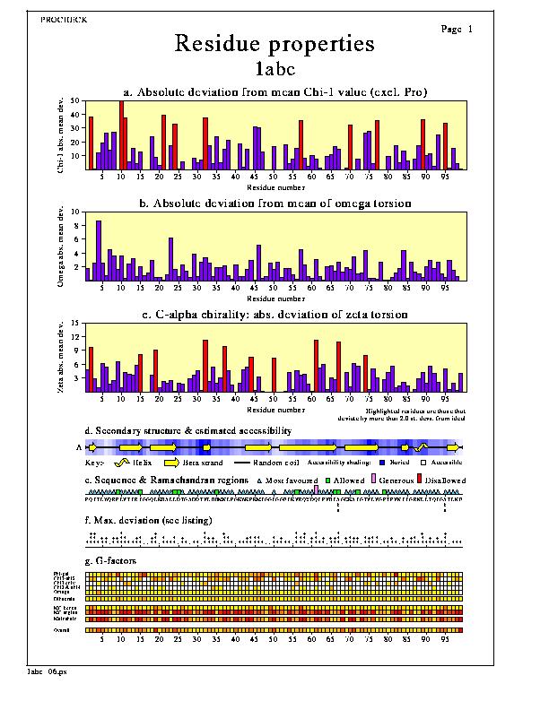

The properties plotted are:-
The first three graphs at the top of the page show:
For each graph, unusual values (usually those more than 2.0 standard deviations away from the "ideal" mean value) are shown highlighted.
The secondary structure plot shows a schematic representation of the Kabsch & Sander (1983) secondary structure assignments. The key just below the picture shows which structure is which. Beta strands are taken to include all residues with a Kabsch & Sander assignment of E, helices corresponds to both H and G assignments, while everything else is taken to be random coil.
The shading behind the schematic picture gives an approximation to the residue accessibilities. The approximation is a fairly crude one, being based on each residue's Ooi number (Nishikawa & Ooi, 1986). An Ooi number is a count of the number of other Calpha atoms within a radius of, in this case, 14Å of the given residue's own Calpha. Although crude, this does give a good impression of which parts of the structure are buried and which are exposed on the surface. Future versions of PROCHECK will include an accurate calculation of residue accessibility.
The next section shows the sequence of the structure (using the 20 standard one-letter amino-acid codes) and a set of markers that identify the region of the Ramachandran plot in which each residue is located. There are four marker types, one for each of the four different types of region: core (ie most favoured), allowed, generous and disallowed.
The small histogram of asterisks and plus-signs shows each residue's maximum deviation from one of the ideal values given on the residue-by-residue listing in the .out file. Refer to the final column of the .out file to see which is the parameter that deviates by the amount shown here.
The shaded squares give a schematic representation of each residue's G-factor values. (Note that the chi-1 G-factors are shown only for those residues that do not have a chi-2, and hence no chi1-chi2 G-factor).
Regions with many dark squares correspond to regions where the properties are "unusual", as defined by a low (or negative) G-factor. These may correspond to highly mobile or poorly defined regions such as loops, or may need further investigation.
Reference
|
|
Nishikawa K and Ooi T (1986). Radial locations of amino-acid residues in a globular protein - correlation with the sequence. J. Biochem., 100, 1043-1047. |
|---|